Week 7
Timeseries and Prediction
Learning Objectives
By the end of this lecture, you should be able to:
- Understand what time series data is and why it’s useful
- Work with date and time objects in R
- Load and visualize time series data in R
- Apply basic time series operations: decomposition, smoothing, and forecasting
- Use
ts,zoo, andxtsobjects for time-indexed data - Understand tidy approaches using
tsibbleandfeasts - Recognize real-world environmental science applications of time series
What is Time Series Data?
Time series data is a collection of observations recorded sequentially over time. Unlike other data types, time series data is ordered, and that order carries critical information.
Examples:
- Streamflow measurements (e.g., daily CFS at a USGS gage)
- Atmospheric CO₂ levels (e.g., Mauna Loa Observatory)
- Snowpack depth over time
- Urban water consumption by month
Why Time Series Matter
Time series analysis helps us:
- Understand trends and patterns
- Detect anomalies (e.g., droughts, sensor failures)
- Forecast future values (e.g., streamflow, temperature)
Working with Date Objects in R
Time series analysis depends on accurate and well-formatted date/time information.
Before we can analyze time series data, we need to understand how R handles dates and times.
R has built-in classes for date and time objects, which are essential for time series analysis.
Base R Date Functions
R has several native classes for handling dates and times:
- Date: Date object
- POSIXct: Date and time
- POSIXlt: List of date and time components
Date Sequences
You can create sequences of dates using the seq.Date() function:
from: Start dateto: End date (optional)by: Interval (e.g., “day”, “month”, “year”)length.out: Number of dates to generate
You can also use seq() to create sequences of POSIXct/lt objects:
from: Start date/timeto: End date/time (optional)by: Interval (e.g., “hour”, “minute”, “second”)length.out: Number of dates to generate
seq(from = as.POSIXct("2024-01-01 00:00"),
to = as.POSIXct("2024-01-02 00:00"),
by = "hour")
#> [1] "2024-01-01 00:00:00 MST" "2024-01-01 01:00:00 MST"
#> [3] "2024-01-01 02:00:00 MST" "2024-01-01 03:00:00 MST"
#> [5] "2024-01-01 04:00:00 MST" "2024-01-01 05:00:00 MST"
#> [7] "2024-01-01 06:00:00 MST" "2024-01-01 07:00:00 MST"
#> [9] "2024-01-01 08:00:00 MST" "2024-01-01 09:00:00 MST"
#> [11] "2024-01-01 10:00:00 MST" "2024-01-01 11:00:00 MST"
#> [13] "2024-01-01 12:00:00 MST" "2024-01-01 13:00:00 MST"
#> [15] "2024-01-01 14:00:00 MST" "2024-01-01 15:00:00 MST"
#> [17] "2024-01-01 16:00:00 MST" "2024-01-01 17:00:00 MST"
#> [19] "2024-01-01 18:00:00 MST" "2024-01-01 19:00:00 MST"
#> [21] "2024-01-01 20:00:00 MST" "2024-01-01 21:00:00 MST"
#> [23] "2024-01-01 22:00:00 MST" "2024-01-01 23:00:00 MST"
#> [25] "2024-01-02 00:00:00 MST"Timezones
By default, R uses the system’s timezone.
The
Sys.timezone()function returns the current timezone.If you want to use another timezone, say GMT/UTC, you can change it:
lubridate Package 

The
lubridatepackage comes with thetidyverseand is designed to make working with dates and times easier.It provides a consistent set of functions for parsing, manipulating, and formatting date-time objects.
Use lubridate to handle inconsistent formats and to align data with time zones, daylight savings, etc.
lubridate timezones 
lubridate also provides functions for working with time zones. You can convert between time zones using with_tz() and force_tz().
(date <- ymd_hms("2024-04-08 14:30:00", tz = "America/New_York"))
#> [1] "2024-04-08 14:30:00 EDT"
# Change time zone without changing time
force_tz(date, "America/Los_Angeles")
#> [1] "2024-04-08 14:30:00 PDT"
# Convert to another timezone
with_tz(date, "America/Los_Angeles")
#> [1] "2024-04-08 11:30:00 PDT"R Packages for Time Series
R has several packages/systems for time series analysis, including:
ts: Base R time series classzoo: Provides a flexible class for ordered observationsxts: Extensible time series class for irregularly spaced dataforecast: Functions for forecasting time series datatsibble: Tidy time series data framesfeasts: Functions for time series analysis and visualizationmodeltime: Time series modeling with tidymodels
When to Use Which Time Series Format?
| Format | Best For | Advantages | Limitations |
|---|---|---|---|
ts |
Regular, simple time series | Built into base R, supported by forecast |
Rigid time format, inflexible for joins |
zoo |
Irregular time steps | Arbitrary index, supports irregular data | More complex syntax |
xts |
Financial-style or irregular data | Good for date-time indexing and joins | More complex to visualize |
tsibble |
Tidyverse workflows | Pipes with dplyr, ggplot2, forecasting with fable |
Requires tsibble structure |
tibble + Date |
General purpose | Flexible, tidy | Needs conversion for time series modeling |
Why zoo? Handling Irregular & Gappy Data
Environmental sensor data frequently has gaps: instruments fail, sites flood, loggers reset. zoo handles irregular time indexes and provides simple gap-filling tools:
library(zoo)
# Simulate sensor data with a gap (missing Jan 2 reading)
dates <- as.Date(c("2024-01-01", "2024-01-03", "2024-01-07"))
vals <- zoo(c(10, NA, 14), order.by = dates)
vals
#> 2024-01-01 2024-01-03 2024-01-07
#> 10 NA 14
# Last observation carried forward (LOCF)
na.locf(vals)
#> 2024-01-01 2024-01-03 2024-01-07
#> 10 10 14
# Linear interpolation between known values
na.approx(vals)
#> 2024-01-01 2024-01-03 2024-01-07
#> 10.00000 11.33333 14.00000Use zoo any time your time index is irregular or your data has missing observations that need filling before modeling.
Key Concepts in Time Series
1. Trend: Long-term increase or decrease in the data
2. Seasonality: Repeating short-term cycle (e.g., annual snowmelt)
3. Noise: Random variation
4. Stationarity: Statistical properties (mean, variance) don’t change over time
5. Autocorrelation: Correlation of a time series with its own past values
Introducing the Mauna Loa CO₂ Dataset
Mauna Loa CO₂ Dataset
The
co2dataset is a classic example of time series data. It contains monthly atmospheric CO₂ concentrations measured at the Mauna Loa Observatory in Hawaii.co2is a built-in dataset representing monthly CO₂ concentrations from 1959 onward.
class(co2)
#> [1] "ts"
co2
#> Jan Feb Mar Apr May Jun Jul Aug Sep Oct
#> 1959 315.42 316.31 316.50 317.56 318.13 318.00 316.39 314.65 313.68 313.18
#> 1960 316.27 316.81 317.42 318.87 319.87 319.43 318.01 315.74 314.00 313.68
#> 1961 316.73 317.54 318.38 319.31 320.42 319.61 318.42 316.63 314.83 315.16
#> 1962 317.78 318.40 319.53 320.42 320.85 320.45 319.45 317.25 316.11 315.27
#> 1963 318.58 318.92 319.70 321.22 322.08 321.31 319.58 317.61 316.05 315.83
#> 1964 319.41 320.07 320.74 321.40 322.06 321.73 320.27 318.54 316.54 316.71
#> 1965 319.27 320.28 320.73 321.97 322.00 321.71 321.05 318.71 317.66 317.14
#> 1966 320.46 321.43 322.23 323.54 323.91 323.59 322.24 320.20 318.48 317.94
#> 1967 322.17 322.34 322.88 324.25 324.83 323.93 322.38 320.76 319.10 319.24
#> 1968 322.40 322.99 323.73 324.86 325.40 325.20 323.98 321.95 320.18 320.09
#> 1969 323.83 324.26 325.47 326.50 327.21 326.54 325.72 323.50 322.22 321.62
#> 1970 324.89 325.82 326.77 327.97 327.91 327.50 326.18 324.53 322.93 322.90
#> 1971 326.01 326.51 327.01 327.62 328.76 328.40 327.20 325.27 323.20 323.40
#> 1972 326.60 327.47 327.58 329.56 329.90 328.92 327.88 326.16 324.68 325.04
#> 1973 328.37 329.40 330.14 331.33 332.31 331.90 330.70 329.15 327.35 327.02
#> 1974 329.18 330.55 331.32 332.48 332.92 332.08 331.01 329.23 327.27 327.21
#> 1975 330.23 331.25 331.87 333.14 333.80 333.43 331.73 329.90 328.40 328.17
#> 1976 331.58 332.39 333.33 334.41 334.71 334.17 332.89 330.77 329.14 328.78
#> 1977 332.75 333.24 334.53 335.90 336.57 336.10 334.76 332.59 331.42 330.98
#> 1978 334.80 335.22 336.47 337.59 337.84 337.72 336.37 334.51 332.60 332.38
#> 1979 336.05 336.59 337.79 338.71 339.30 339.12 337.56 335.92 333.75 333.70
#> 1980 337.84 338.19 339.91 340.60 341.29 341.00 339.39 337.43 335.72 335.84
#> 1981 339.06 340.30 341.21 342.33 342.74 342.08 340.32 338.26 336.52 336.68
#> 1982 340.57 341.44 342.53 343.39 343.96 343.18 341.88 339.65 337.81 337.69
#> 1983 341.20 342.35 342.93 344.77 345.58 345.14 343.81 342.21 339.69 339.82
#> 1984 343.52 344.33 345.11 346.88 347.25 346.62 345.22 343.11 340.90 341.18
#> 1985 344.79 345.82 347.25 348.17 348.74 348.07 346.38 344.51 342.92 342.62
#> 1986 346.11 346.78 347.68 349.37 350.03 349.37 347.76 345.73 344.68 343.99
#> 1987 347.84 348.29 349.23 350.80 351.66 351.07 349.33 347.92 346.27 346.18
#> 1988 350.25 351.54 352.05 353.41 354.04 353.62 352.22 350.27 348.55 348.72
#> 1989 352.60 352.92 353.53 355.26 355.52 354.97 353.75 351.52 349.64 349.83
#> 1990 353.50 354.55 355.23 356.04 357.00 356.07 354.67 352.76 350.82 351.04
#> 1991 354.59 355.63 357.03 358.48 359.22 358.12 356.06 353.92 352.05 352.11
#> 1992 355.88 356.63 357.72 359.07 359.58 359.17 356.94 354.92 352.94 353.23
#> 1993 356.63 357.10 358.32 359.41 360.23 359.55 357.53 355.48 353.67 353.95
#> 1994 358.34 358.89 359.95 361.25 361.67 360.94 359.55 357.49 355.84 356.00
#> 1995 359.98 361.03 361.66 363.48 363.82 363.30 361.94 359.50 358.11 357.80
#> 1996 362.09 363.29 364.06 364.76 365.45 365.01 363.70 361.54 359.51 359.65
#> 1997 363.23 364.06 364.61 366.40 366.84 365.68 364.52 362.57 360.24 360.83
#> Nov Dec
#> 1959 314.66 315.43
#> 1960 314.84 316.03
#> 1961 315.94 316.85
#> 1962 316.53 317.53
#> 1963 316.91 318.20
#> 1964 317.53 318.55
#> 1965 318.70 319.25
#> 1966 319.63 320.87
#> 1967 320.56 321.80
#> 1968 321.16 322.74
#> 1969 322.69 323.95
#> 1970 323.85 324.96
#> 1971 324.63 325.85
#> 1972 326.34 327.39
#> 1973 327.99 328.48
#> 1974 328.29 329.41
#> 1975 329.32 330.59
#> 1976 330.14 331.52
#> 1977 332.24 333.68
#> 1978 333.75 334.78
#> 1979 335.12 336.56
#> 1980 336.93 338.04
#> 1981 338.19 339.44
#> 1982 339.09 340.32
#> 1983 340.98 342.82
#> 1984 342.80 344.04
#> 1985 344.06 345.38
#> 1986 345.48 346.72
#> 1987 347.64 348.78
#> 1988 349.91 351.18
#> 1989 351.14 352.37
#> 1990 352.69 354.07
#> 1991 353.64 354.89
#> 1992 354.09 355.33
#> 1993 355.30 356.78
#> 1994 357.59 359.05
#> 1995 359.61 360.74
#> 1996 360.80 362.38
#> 1997 362.49 364.34Initial Plot
The
co2dataset is a time series object (ts) with 12 observations per year, starting from January 1959.There is a default plot method for
tsobjects that we can take advantage of:
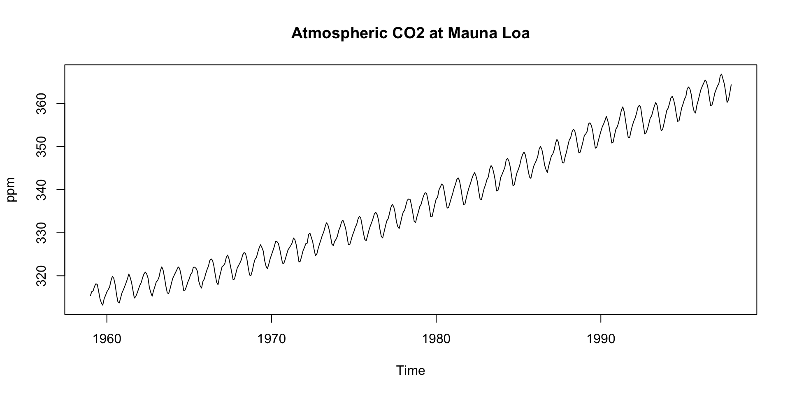
We see:
- An upward trend
- Regular seasonal oscillations (higher in winter, lower in summer)
Understanding ts Objects
You can think of ts objects as numeric vectors with time attributes.
tsobjects are used to represent time series data and are created using thets()function.They have attributes like
start,end, andfrequencythat define the time index.startandenddefine the time range of the data.frequencydefines the number of observations per unit of time (e.g., 12 for monthly data).
Subsetting and Plotting
Like vectors, you can subset
tsobjects using indexing.For example, to extract the first year of data:
- Or, a specific range of years:
window(co2, start = c(1990, 1), end = c(1995, 12))
#> Jan Feb Mar Apr May Jun Jul Aug Sep Oct
#> 1990 353.50 354.55 355.23 356.04 357.00 356.07 354.67 352.76 350.82 351.04
#> 1991 354.59 355.63 357.03 358.48 359.22 358.12 356.06 353.92 352.05 352.11
#> 1992 355.88 356.63 357.72 359.07 359.58 359.17 356.94 354.92 352.94 353.23
#> 1993 356.63 357.10 358.32 359.41 360.23 359.55 357.53 355.48 353.67 353.95
#> 1994 358.34 358.89 359.95 361.25 361.67 360.94 359.55 357.49 355.84 356.00
#> 1995 359.98 361.03 361.66 363.48 363.82 363.30 361.94 359.50 358.11 357.80
#> Nov Dec
#> 1990 352.69 354.07
#> 1991 353.64 354.89
#> 1992 354.09 355.33
#> 1993 355.30 356.78
#> 1994 357.59 359.05
#> 1995 359.61 360.74Decomposing a Time Series
Decomposition is a technique to separate a time series into its components: trend, seasonality, and residuals.
This helps separate structure from noise.
In environmental science, this is useful for:
Removing seasonality to study droughts
Analyzing long-term trends
Understanding seasonal patterns in streamflow
Identifying anomalies in water quality data
Detecting changes in vegetation phenology
Monitoring seasonal patterns in temperature
Analyzing seasonal patterns in water demand
…
What is Decomposition?
Decomposition separates a time series into interpretable components:
- Trend: Long-term movement
- Seasonality: Regular, periodic fluctuations
- Residual/Irregular: Random noise or anomalies
Additive vs Multiplicative
Additive: components sum to the observed value: \[ Y_t = T_t + S_t + R_t \] Seasonal swings are the same size regardless of level. Example: air temperature: a 10°F summer bump is 10°F whether the baseline is 50°F or 70°F.
Multiplicative: components scale with the level: \[ Y_t = T_t \times S_t \times R_t \] Seasonal swings grow with the trend. Example: streamflow: a snowmelt pulse that doubles flow is much larger at 500 cfs than at 50 cfs.
Tip
The log trick: \(\log(T \times S \times R) = \log T + \log S + \log R\) Taking log1p() converts a multiplicative process into an additive one: which is why we log-transform flow before fitting models and decomposing.
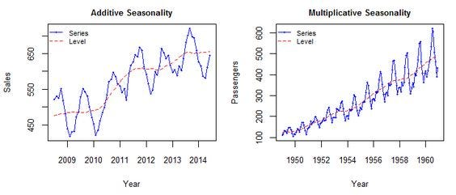
Why Decompose?
Trend: Are CO₂ levels increasing?
Seasonality: Are there predictable cycles each year?
Remainder: What’s left after we remove trend and season? (what is the randomness?)
Decomposition in R
- The
decompose()function in R can be used to perform this operation. - The
decompose()function by default assumes that the time series is additive

Deep Dive: Trend Component
Steady upward slope from ~316 ppm in 1959 to ~365 ppm in the late 1990s
Captures the long-term forcing from human activity:
- Fossil fuel combustion
- Deforestation
This trend underpins climate change science: known as the Keeling Curve
Notice how the trend smooths short-term fluctuations
Interpreting the Trend
- A linear model or loess smoother can also help quantify the trend:
co2_df <- data.frame(time = time(co2), co2 = as.numeric(co2))
lm(as.numeric(co2) ~ time(co2)) |>
summary()
#>
#> Call:
#> lm(formula = as.numeric(co2) ~ time(co2))
#>
#> Residuals:
#> Min 1Q Median 3Q Max
#> -6.0399 -1.9476 -0.0017 1.9113 6.5149
#>
#> Coefficients:
#> Estimate Std. Error t value Pr(>|t|)
#> (Intercept) -2.250e+03 2.127e+01 -105.8 <2e-16 ***
#> time(co2) 1.308e+00 1.075e-02 121.6 <2e-16 ***
#> ---
#> Signif. codes: 0 '***' 0.001 '**' 0.01 '*' 0.05 '.' 0.1 ' ' 1
#>
#> Residual standard error: 2.618 on 466 degrees of freedom
#> Multiple R-squared: 0.9695, Adjusted R-squared: 0.9694
#> F-statistic: 1.479e+04 on 1 and 466 DF, p-value: < 2.2e-16Note
Reading the outputs:
- Linear model: slope = +1.31 ppm/year (p < 2e-16), R² = 0.97: CO₂ rises ~1.3 ppm every year on average and a straight line explains 97% of the variance.
- Loess curve: at
span = 0.2the smoother tracks the data closely and appears nearly linear here: confirming the linear model is a good fit for this 30-year window. The loess adds value by revealing that no strong curvature exists in this range. - Acceleration caveat: the Mauna Loa record now extends to 2024 (~425 ppm). On that longer record the loess does curve upward: the rate has increased from ~1 ppm/yr in the 1960s to ~2.5 ppm/yr today. This dataset ends in 1997 and is too short to show it clearly.
- Takeaway: a high R² linear fit is not evidence of no acceleration: always ask whether the time window is long enough to detect the pattern you’re looking for.
De-Trending
- Detrending is the process of removing the trend component from a time series.
- This isolates the seasonal + residual components:
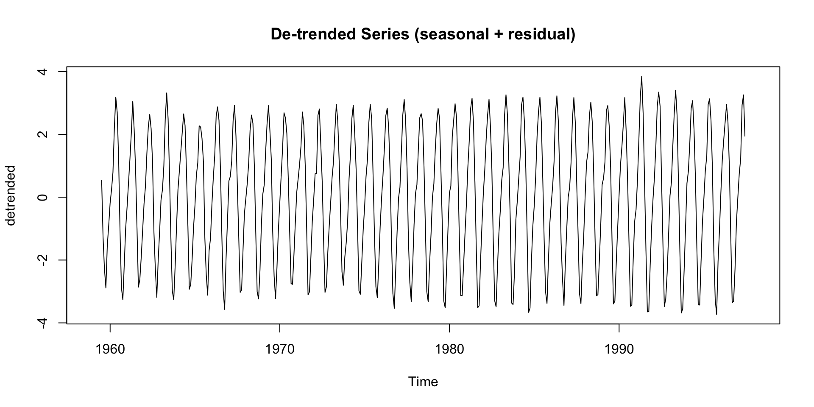
Deep Dive: Seasonal Component
Repeats every 12 months
Peaks around May, drops in September–October
Driven by biospheric fluxes:
- Photosynthesis during spring/summer → CO₂ drawdown
- Decomposition and respiration in winter → CO₂ release
Seasonal Cycle is Northern Hemisphere-Dominated (Mauna Loa is in the Northern Hemisphere)
Northern Hemisphere contains more landmass and vegetation
So its biosphere exerts a stronger influence on global CO₂ than the Southern Hemisphere
This explains the pronounced seasonal cycle in the signal
De-seasonalizing
This can help for modeling the seasonal + residual only:
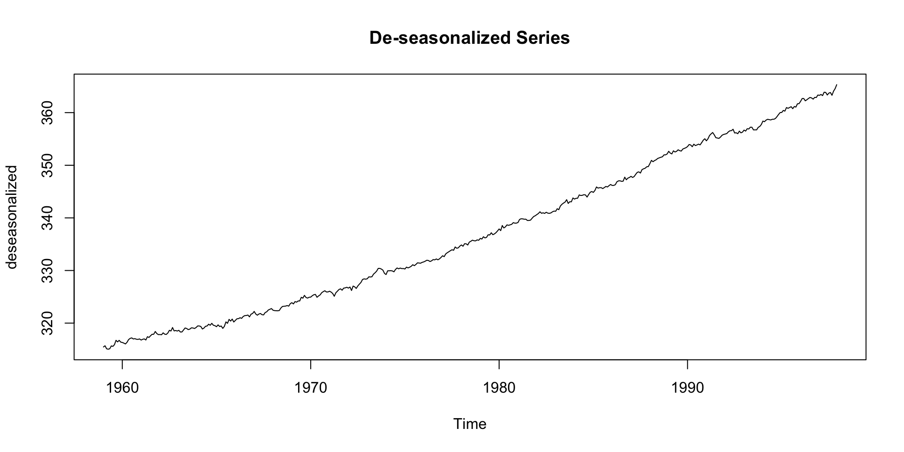
Deep Dive: Remainder Component
Residuals are the “leftover” part of the time series after removing trend and seasonality
Contains irregular, short-term fluctuations
Can be used to identify anomalies or outliers
Important for understanding noise in the data
Possible sources:
- Volcanic activity (e.g. El Chichón, Mt. Pinatubo)
- Measurement error
- El Niño/La Niña events (which affect carbon flux)
Typically small amplitude: ±0.2 ppm
Assessing Patterns in Error?
You might compute the standard deviation of the residuals to assess noise:
Or evaluate the residuals like we did for Linear Modeling!
Note
So what? SD ≈ 0.27 ppm: small relative to the ~60 ppm trend, so the decomposition captured most of the signal. The density is roughly bell-shaped and centered near zero, which is what we want: no systematic bias. The left skew (longer left tail) suggests occasional sharp drops in CO₂: likely real events (e.g., El Niño years when terrestrial uptake spikes) rather than model failure. If residuals were right-skewed, flat, or multi-modal, that would signal missing structure (another seasonal cycle, a regime shift, or a trend the model didn’t account for).
Smoothing to Remove Noise
If your data is noisy - and without useful pattern - you can use a moving average to smooth it out.
- The
zoopackage provides a convenient function for this that we have already seen in Lab 1. - The
rollmean()function from thezoopackage is useful for this. - The
kparameter specifies the window size for the moving average. - The
alignparameter specifies how to align the moving average with the original data (e.g., “center”, “left”, “right”). - The
na.padparameter specifies whether to pad the result withNAvalues.
STL Decomposition (Loess-based)
STL (Seasonal-Trend decomposition using Loess) adapts to changing trend or seasonality over time
Doesn’t assume constant seasonal effect like
decompose()doesParticularly valuable when working with:
- Long datasets
- Environmental time series affected by nonlinear changes
STL Decomposition (Loess-based)
stl()uses local regression (loess) to estimate the trend and seasonal components.s.window = "periodic"specifies that the seasonal component is periodic.Other options include
- “none” (no seasonal component)
- or a numeric value for the seasonal window size.
Comparing Classical vs STL
| Method | Assumes Constant Season? | Robust to Outliers? | Adaptive Smoothing? |
|---|---|---|---|
decompose |
✅ Yes | ❌ No | ❌ No |
stl |
🔄 Adaptive | ✅ Yes | ✅ Yes |
What these columns mean in practice:
Assumes constant season?
decomposefits one fixed seasonal pattern for the entire record. If snowmelt peaks have shifted earlier over 30 years (they have: USGS data shows ~2 weeks earlier in the West), the model treats that as noise rather than a real signal.stllets the seasonal shape evolve.Robust to outliers? A single wildfire year with anomalous summer flows can distort
decompose’s seasonal estimate for all years.stluses iterative reweighting to down-weight outlying observations: the Cameron Peak Fire year gets less influence.Adaptive smoothing?
stlexposess.windowandt.windowparameters so you can control how quickly trend and season are allowed to change.decomposehas no such knobs.
Tip
Rule of thumb: use decompose for quick exploratory looks at short, well-behaved series. Switch to stl the moment your data spans more than a decade, contains outliers, or you suspect the seasonal pattern has shifted.
Bringing It All Together
For the CO₂ dataset, decomposition reveals three interpretable layers:
- Trend: A relentless human fingerprint: the Keeling Curve shows atmospheric CO₂ rising ~1.5 ppm/year, driven by fossil fuels and deforestation
- Seasonality: A stable biospheric rhythm: photosynthesis draws CO₂ down each summer; respiration releases it each winter; Northern Hemisphere vegetation dominates
- Remainder: Small (±0.2 ppm) but informative: anomalies here may fingerprint volcanic eruptions or El Niño-driven carbon flux shifts
Understanding these components lets us:
✅ Track long-term progress against climate targets
✅ Forecast future CO₂ concentrations with ARIMA or Prophet
✅ Communicate patterns clearly to policymakers
Time Series in the Tidyverse: tsibble / feasts
tsibbleis a tidy data frame for time series data. It extends the tibble class to include time series attributes.Compatible with
dplyr,ggplot2feastsprovides functions for time series analysis and visualization.
Decomposing with feasts
feasts provides:
- a
STL()function for seasonal decomposition. components()extracts the components of the decomposition.gg_season()andgg_subseries()visualize seasonal patterns.gg_lag()visualizes autocorrelation and lagged relationships.
co2_decomp <- co2_tbl |>
model(STL(value ~ season(window = "periodic"))) |>
components()
glimpse(co2_decomp)
#> Rows: 468
#> Columns: 7
#> Key: .model [1]
#> : value = trend + season_year + remainder
#> $ .model <chr> "STL(value ~ season(window = \"periodic\"))", "STL(value…
#> $ index <mth> 1959 Jan, 1959 Feb, 1959 Mar, 1959 Apr, 1959 May, 1959 J…
#> $ value <dbl> 315.42, 316.31, 316.50, 317.56, 318.13, 318.00, 316.39, …
#> $ trend <dbl> 315.1954, 315.3023, 315.4093, 315.5147, 315.6201, 315.71…
#> $ season_year <dbl> -0.06100103, 0.59463870, 1.32899651, 2.46904706, 2.95704…
#> $ remainder <dbl> 0.28564410, 0.41305456, -0.23825306, -0.42371128, -0.447…
#> $ season_adjust <dbl> 315.4810, 315.7154, 315.1710, 315.0910, 315.1730, 315.68…Component Access
Autoplot
Advanced Visualization with feasts
feasts provides three complementary diagnostic plots for exploring seasonal structure:
| Function | Question it answers |
|---|---|
gg_lag() |
Is the series autocorrelated? Do past values predict the present? |
gg_subseries() |
How does each season behave across years? Is the seasonal mean stable? |
gg_season() |
Is the seasonal shape consistent from year to year? |
Together, these plots reveal whether your series has exploitable structure worth modeling.
gg_lag()
A lag plot scatters \(Y_t\) against \(Y_{t-k}\) for each lag \(k\). Points close to the diagonal mean past values predict current values well.
What you’re seeing:
- Tight diagonal lines at every lag: CO₂ has very strong autocorrelation — knowing last month’s value tells you almost exactly what this month’s value will be
- Lines fan slightly wider at lag 6: the 6-month lag straddles opposite seasons (summer vs. winter), so the seasonal cycle introduces a small offset
- Color banding by month: each month traces its own trajectory — purple (Jan/Feb, low) through yellow (Nov/Dec, high) — revealing the seasonal sawtooth embedded within the trend
- No diffuse scatter: there is no lag at which CO₂ “forgets” its past; this series has extremely long memory
Tip
Strong diagonal structure at all lags is the visual signature that ARIMA and Prophet will have predictive power here.
gg_subseries
gg_subseries() creates one mini-panel per season (e.g., one per month) and plots each season’s values across all years, with a horizontal mean line.
- Each panel = one seasonal period (Jan, Feb, …, Dec)
- Each line within a panel = the value for that month in a given year
- The mean line = average level for that month across all years
- Rising panels indicate a long-term trend within that season
- Differences in mean line height across panels reveal the seasonal pattern
gg_subseries()
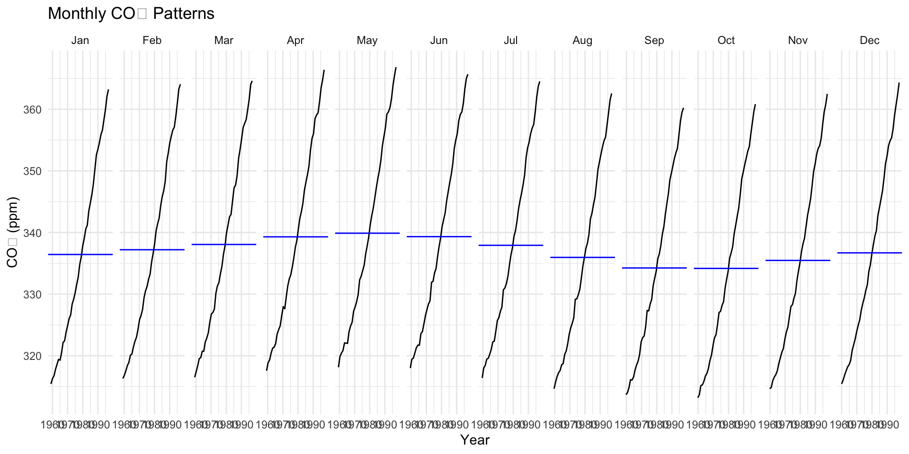
gg_season
gg_season() overlays all years on a single plot, with the x-axis running from the start to the end of one seasonal period (e.g., January to December).
- Each line = one year of data
- Parallel lines = consistent seasonal shape across years (stable seasonality)
- Diverging lines = the seasonal pattern is changing over time
- Vertical spread = the overall level shifting year-to-year (the trend)
For CO₂, the lines run nearly parallel: confirming that seasonality is stable: but shift upward each year, tracing the Keeling Curve.
gg_season
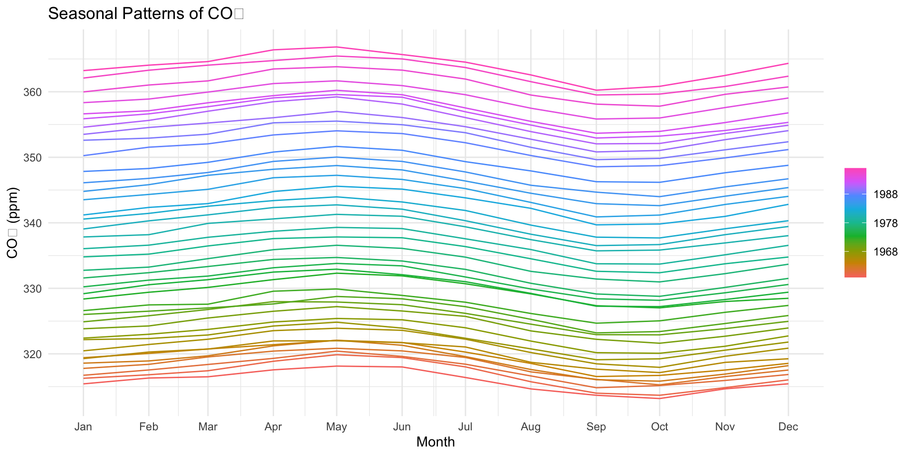
Bonus: Interactive Plotting
In last weeks demo, we used plotly to generate an interactive plot of the hyperparameter tuning process.
You can use the
plotlypackage to add interactivity to your ggplots directly withggplotly()!
Bonus: Interactive Plotting
Forecasting
Now that we understand time series components, we can use them to predict future values.
We’ll build from classical to modern:
| Model | Strength | |
|---|---|---|
| Classical | ARIMA | Autocorrelation structure, stationarity-based |
| Modern | Prophet | Trend changepoints, holidays, missing data |
| Unified | modeltime + tidymodels |
Compare, calibrate, and forecast all models in one pipeline |
Both approaches need the same foundation: a stationary, well-understood series — which is exactly what decomposition gave us.
ARIMA Intuition
ARIMA(p, d, q) combines three ideas — each answering a different question about the series:
| Component | Question it answers | River analogy |
|---|---|---|
| AR(p): AutoRegressive | How much do the last p values predict today? | Spring snowmelt: if flow rose the last 3 days, it will likely keep rising |
| I(d): Integrated | How many times must we difference to remove trend? | Subtracting yesterday’s flow from today’s converts a climbing hydrograph into stationary fluctuations |
| MA(q): Moving Average | How much does last week’s forecast error still linger? | An unexpected storm pulse 2 days ago still echoes in today’s flow; MA absorbs that shock |
These map directly to the parameters: ARIMA(p, d, q)
p= lags of the series used as predictors (read from the PACF)d= number of differences needed for stationarity (usually 0 or 1)q= lags of the error term retained (read from the ACF)
ARIMA
The basics of a ARIMA (AutoRegressive Integrated Moving Average) Model include:
- AR: AutoRegressive part (past values):
- AR(1) = current value depends on the previous value
- AR(2) = current value depends on the previous two values
- AR(1) = current value depends on the previous value
- I: Integrated part (differencing to make data stationary)
- Differencing removes trends and seasonality
- e.g.,
diff(co2, lag = 12)removes annual seasonality
- Differencing removes trends and seasonality
- MA: Moving Average part (past errors)
- MA(1) = current value depends on the previous error
- MA(2) = current value depends on the previous two errors
- MA(1) = current value depends on the previous error
- p, d, q: Parameters for AR, I, and MA
- p = number of lagged values (AR)
- d = number of differences (I)
- q = number of lagged errors (MA)
- p = number of lagged values (AR)
Stationarity: A Prerequisite for ARIMA
ARIMA modeling works well when data is stationary: meaning the statistical properties (mean, variance) do not change over time.
- Non-stationary data leads to unreliable forecasts and misleading results
- The I (Integrated) component of ARIMA handles this via differencing
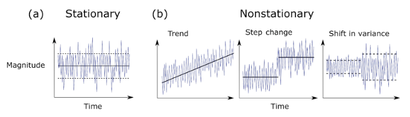
Testing for Stationarity
Don’t just look: test. Two complementary formal tests:
library(tseries)
# Augmented Dickey-Fuller: H0 = non-stationary
# p < 0.05 → reject non-stationarity (series IS stationary)
adf.test(co2)
#>
#> Augmented Dickey-Fuller Test
#>
#> data: co2
#> Dickey-Fuller = -2.8299, Lag order = 7, p-value = 0.2269
#> alternative hypothesis: stationary
# KPSS: H0 = stationary
# p < 0.05 → reject stationarity (series is NOT stationary)
kpss.test(co2)
#>
#> KPSS Test for Level Stationarity
#>
#> data: co2
#> KPSS Level = 7.8173, Truncation lag parameter = 5, p-value = 0.01Note
Reading these results together:
- ADF: p = 0.23 → fail to reject H₀ → cannot confirm stationarity. The series looks non-stationary.
- KPSS: p = 0.01 → reject H₀ → confirmed non-stationary.
Both tests agree: CO₂ has a strong upward trend that violates stationarity. Set d = 1 (first-difference) in ARIMA to remove it.
Why run both? The tests have opposite null hypotheses, so agreement is reassuring. When they disagree — ADF says stationary, KPSS says not — the series is likely trend-stationary (a deterministic trend, not a random walk), which calls for detrending rather than differencing.
A Simple Forecasting Example
auto.arima()is a function from theforecastpackage that automatically selects the best ARIMA model for your data according to the AICc criterion.- The AICc (Akaike Information Criterion corrected) is a measure of the relative quality of statistical models for a given dataset.
- It is used to compare different models and select the one that best fits the data while penalizing for complexity.
- The
auto.arima()function will automatically select the best parameters (p,d,q) based on the AICc criterion.
AIC: Reading the Model Selection Output
The summary() output shows an AIC value — this is what auto.arima() minimized to choose the model:
\[\text{AIC} = -2 \cdot \log(\text{likelihood}) + 2k\]
where \(k\) is the number of parameters. Lower AIC = better balance of fit and simplicity.
| Term | What it does |
|---|---|
| \(-2 \log(\mathcal{L})\) | Rewards fit: lower when the model explains the data well |
| \(+2k\) | Penalizes complexity: each extra parameter costs 2 AIC units |
Tip
In practice: AIC is not an absolute measure — only differences matter. An ARIMA(1,1,1) with AIC = 480 vs. ARIMA(2,1,2) with AIC = 485 favors the simpler model. auto.arima() searches over (p,d,q) combinations and returns the winner. You rarely need to compute AIC by hand — but you do need to know what you’re reading in the output.
Fitting an ARIMA Model
library(forecast)
co2_arima <- auto.arima(co2)
summary(co2_arima)
#> Series: co2
#> ARIMA(1,1,1)(1,1,2)[12]
#>
#> Coefficients:
#> ar1 ma1 sar1 sma1 sma2
#> 0.2569 -0.5847 -0.5489 -0.2620 -0.5123
#> s.e. 0.1406 0.1204 0.5880 0.5701 0.4819
#>
#> sigma^2 = 0.08576: log likelihood = -84.39
#> AIC=180.78 AICc=180.97 BIC=205.5
#>
#> Training set error measures:
#> ME RMSE MAE MPE MAPE MASE
#> Training set 0.01742092 0.287159 0.2303994 0.005073769 0.06845665 0.1819636
#> ACF1
#> Training set -0.002858162Reading ARIMA(1,1,1)(1,1,2)[12]
Non-seasonal part: ARIMA(p, d, q) = (1, 1, 1)
| Symbol | Meaning | For CO₂ |
|---|---|---|
| AR(1) | Use 1 lagged value of \(Y\) | Last month’s CO₂ predicts this month’s |
| I(1) | Difference once | Removes the upward trend |
| MA(1) | Use 1 lagged forecast error | Corrects for last month’s prediction miss |
Seasonal part: (P, D, Q)[m] = (1, 1, 2)[12]
| Symbol | Meaning | For CO₂ |
|---|---|---|
| SAR(1) | Use value from 12 months ago | Last January predicts this January |
| SI(1) | Seasonal difference once | Removes the annual seasonal cycle |
| SMA(2) | Errors from 12 and 24 months ago | Smooths persistent seasonal shocks |
| [12] | Seasonal period = 12 | Monthly data with yearly seasonality |
Note
Plain English: take the series, remove the trend (difference once) and the seasonal cycle (difference across 12 months), then model what remains using last month’s value, last year’s value, and the recent forecast errors. auto.arima() found this structure by minimizing AIC across hundreds of candidate models.
Tip
Streamflow equivalent: if you applied auto.arima() to monthly Poudre flows, you’d likely see a similar [12] seasonal structure — May 2023 strongly predicts May 2024 because snowmelt timing is physically consistent year to year.
Autocorrelation: ACF & PACF
The ACF (Autocorrelation Function) and PACF (Partial Autocorrelation Function) are the standard diagnostics for choosing ARIMA orders.
- ACF(k): correlation between \(y_t\) and \(y_{t-k}\) (includes indirect effects through intermediate lags)
- PACF(k): the direct effect of \(y_{t-k}\) on \(y_t\) after removing the influence of lags 1 through \(k-1\)
What they tell you about ARIMA(p, d, q):
| Plot | Pattern | Suggests |
|---|---|---|
| ACF | Cuts off after lag q | MA(q) term |
| PACF | Cuts off after lag p | AR(p) term |
| Both | Tail off gradually | ARMA(p,q) |
ACF & PACF in R
The slow decay in the ACF and a sharp cutoff in the PACF at lag 1 are classic signatures of an AR process: consistent with the ARIMA(1,…) selected by auto.arima().
Forecasting with ARIMA
- The
forecast()function is used to generate forecasts from the fitted ARIMA model. - The
hargument specifies the number of periods to forecast into the future.
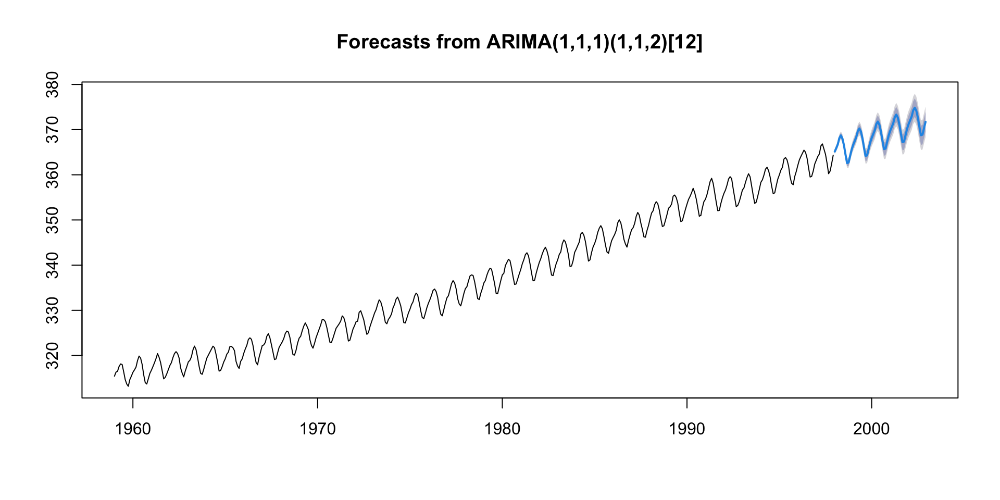
Prophet
Prophet is an open-source tool for forecasting time series data.
Developed by Facebook (Meta)
Designed for analysts and data scientists
Handles missing data, outliers, and seasonality
Key Features of Prophet
✅ Additive Model: Trend + Seasonality + Holidays + Noise
✅ Automatic Changepoint Detection
✅ Support for Custom Holidays & Events
✅ Flexible Seasonality (daily/weekly/yearly)
✅ Easy-to-use API in R and Python
Prophet’s Model Structure
Prophet decomposes time series into components:
\[ y(t) = g(t) + s(t) + h(t) + ε(t) \]
g(t): Trend (linear or logistic growth)
s(t): Seasonality (Fourier series)
h(t): Holiday effects
ε(t): Error term (noise)
📌 Assumes additive components by default; multiplicative also possible
A Simple Forecasting Example
Your time series must have: (1) ds column (date/timestamp) (2) y column (value to forecast)
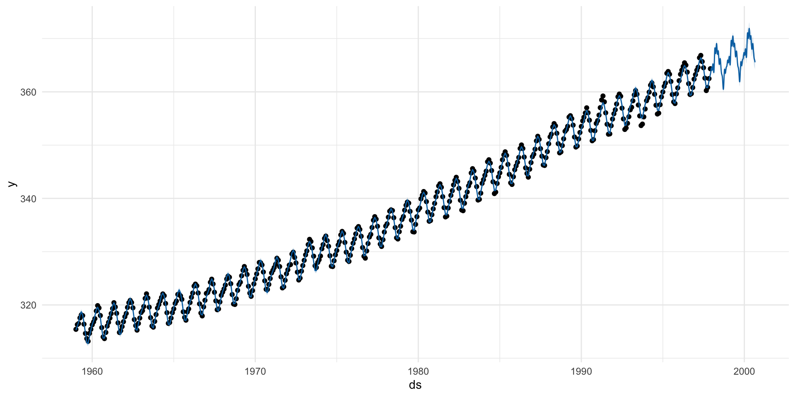
Pros / Cons
| Feature | ARIMA | Prophet |
|---|---|---|
| Statistical rigor | Based on strong statistical theory; well-studied | Intuitive, decomposable model (trend + seasonality + events) |
| Interpretability | Clear interpretation of AR, MA, differencing terms | Plots components like trend/seasonality directly |
| Flexibility (SARIMA) | Seasonal ARIMA can handle seasonal structure | Handles multiple seasonalities natively (yearly, weekly, daily) |
| Control over params | Fine-tuned control over differencing, lags, and model order | Easy to specify changepoints, seasonality, and custom events |
| Statistical testing | Includes AIC/BIC for model selection | Cross-validation support; uncertainty intervals included |
| Requires stationarity | Time series must be stationary or made so (differencing) | Handles non-stationary data out of the box |
Pros / Cons (cont.)
| Feature | ARIMA | Prophet |
|---|---|---|
| Model complexity | Needs careful tuning (p,d,q) and domain expertise | Defaults work well; limited tuning needed |
| Holiday effects | Must be encoded manually | Easy to include holidays/events |
| Multivariate support | Basic ARIMA doesn’t support exogenous variables easily (need ARIMAX) | Supports external regressors with add_regressor() |
| Non-linear trends | Poor performance with structural breaks or non-linear growth | Handles changepoints and logistic growth models well |
| Seasonality limits | SARIMA handles only one seasonal period well | Built-in multiple seasonal components (e.g., daily, weekly, yearly) |
TL;DR
- Use ARIMA for a classical, statistical model with deep customization: when you’re comfortable making your data stationary.
- Use Prophet for a fast, robust, intuitive model: when data has strong seasonal effects, irregular events, or missing values.
Too much complexity!
Each model has it own requirements, arguments, and tuning parameters.
Similar to our ML models, this introduces a large time sink, opportunity for error, and complexity.
modeltimebrings tidy workflows to time series forecasting using theparsnipandworkflowsframeworks fromtidymodels.Combine multiple models (ARIMA, Prophet, XGBoost) in one framework to
Modeltime Integration 

1. Create a time series split …
Use
time_series_split()to make a train/test set.Setting assess = “…” tells the function to use the last … of data as the testing set.
Setting cumulative =
TRUEtells the sampling to use all of the prior data as the training set.
2. Specify Models …
Just like tidymodels …
Model Spec:
arima_reg()/prophet_reg()/prophet_boost()<– This sets up your general model algorithm and key parametersModel Mode:
mode = "regression"/mode = "classification"<– This sets the model mode to regression or classification (timeseries is always regression!)Set Engine:
set_engine("auto_arima")/set_engine("prophet")/ <– This selects the specific package-function to use, you can add any function-level arguments here.
mods <- list(
arima_reg() |> set_engine("auto_arima"),
arima_boost(min_n = 2, learn_rate = 0.015) |> set_engine(engine = "auto_arima_xgboost"),
prophet_reg() |> set_engine("prophet"),
prophet_boost() |> set_engine("prophet_xgboost"),
# Exponential Smoothing State Space model
exp_smoothing() |> set_engine(engine = "ets"),
# Multivariate Adaptive Regression Spline model
mars(mode = "regression") |> set_engine("earth")
)3. Fit Models …
Use
purrr::map()tofitthemodelsto the training data.Fit Model: fit(value ~ date, training) <– All
modeltimemodels require a date column to be a regressor.
Note
Why not workflow() / workflowsets? Those are the right tools when you need a preprocessor (recipe) + model spec together — e.g., normalizing predictors before a regression. modeltime models (arima_reg(), prophet_reg(), etc.) consume the date column directly and have no preprocessing step, so wrapping them in a workflow adds boilerplate without benefit. purrr::map() over a list of specs is the idiomatic modeltime pattern.
4. Build modeltime table …
In tidymodels, after fitting you have a single model object. With multiple models you need a container — something to hold all fitted models together so calibration, accuracy, and forecasting operate on all of them at once.
modeltime_table() is that container. Think of it as the time series equivalent of a workflowset result table: a tidy tibble where each row is one fitted model.
| tidymodels concept | modeltime equivalent |
|---|---|
Single workflow fit |
Single fitted arima_reg() / prophet_reg() |
workflowset results tibble |
modeltime_table |
collect_metrics() |
modeltime_accuracy() |
predict() on test set |
modeltime_calibrate() → modeltime_forecast() |
(models_tbl <- as_modeltime_table(models))
#> # Modeltime Table
#> # A tibble: 6 × 3
#> .model_id .model .model_desc
#> <int> <list> <chr>
#> 1 1 <fit[+]> ARIMA(1,1,1)(2,1,2)[12]
#> 2 2 <fit[+]> ARIMA(1,1,1)(0,1,1)[12]
#> 3 3 <fit[+]> PROPHET
#> 4 4 <fit[+]> PROPHET
#> 5 5 <fit[+]> ETS(M,A,A)
#> 6 6 <fit[+]> EARTHNote
as_modeltime_table() is used when models come from map() (a list). modeltime_table() is used when passing models individually: modeltime_table(fit1, fit2, fit3). Either way the result is the same row-per-model tibble that drives the rest of the pipeline.
Notes:
modeltime_table() does some basic checking to ensure all models are fit and organized into a scalable structure called a “Modeltime Table” that is used as part of our forecasting workflow.
- It’s expected that tuning and parameter selection is performed prior to incorporating into a Modeltime Table.
- If you try to add an unfitted model, the
modeltime_table()will complain (throw an informative error) saying you need to fit() the model.
5. Calibrate the Models …
Use
modeltime_calibrate()to evaluate the models on the test set.Calibrating adds a new column,
.calibration_data, with the test predictions and residuals inside.
(calibration_table <- modeltime_calibrate(models_tbl, testing, quiet = FALSE))
#> # Modeltime Table
#> # A tibble: 6 × 5
#> .model_id .model .model_desc .type .calibration_data
#> <int> <list> <chr> <chr> <list>
#> 1 1 <fit[+]> ARIMA(1,1,1)(2,1,2)[12] Test <tibble [60 × 4]>
#> 2 2 <fit[+]> ARIMA(1,1,1)(0,1,1)[12] Test <tibble [60 × 4]>
#> 3 3 <fit[+]> PROPHET Test <tibble [60 × 4]>
#> 4 4 <fit[+]> PROPHET Test <tibble [60 × 4]>
#> 5 5 <fit[+]> ETS(M,A,A) Test <tibble [60 × 4]>
#> 6 6 <fit[+]> EARTH Test <tibble [60 × 4]>Note
Yes — calibration intentionally uses the test set. In modeltime, “calibrate” does not mean fitting or tuning — the models are already fitted. It means: run each fitted model forward on held-out data, record the predictions and residuals, and use those residuals to estimate confidence interval width.
This is different from how “calibration” is used in probability calibration (e.g., isotonic regression on classifier outputs). Here it is closer to out-of-sample error estimation — the same principle as collect_metrics() on a test set in tidymodels.
The residuals computed here flow downstream into modeltime_accuracy() (RMSE, MAE, MASE) and into the confidence bands on the forecast plot. No data leakage occurs because the models were fitted only on training data.
Testing Forecast & Accuracy Evaluation
There are 2 critical parts to an evaluation.
- Evaluating the Test (Out of Sample) Accuracy
- Visualizing the Forecast vs Test Data Set
Accuracy
modeltime_accuracy() collects common accuracy metrics using yardstick functions:
- MAE - Mean absolute error, mae()
- MAPE - Mean absolute percentage error, mape()
- MASE - Mean absolute scaled error, mase()
- SMAPE - Symmetric mean absolute percentage error, smape()
- RMSE - Root mean squared error, rmse()
- RSQ - R-squared, rsq()
modeltime_accuracy(calibration_table) |>
arrange(mae)
#> # A tibble: 6 × 9
#> .model_id .model_desc .type mae mape mase smape rmse rsq
#> <int> <chr> <chr> <dbl> <dbl> <dbl> <dbl> <dbl> <dbl>
#> 1 1 ARIMA(1,1,1)(2,1,2)[12] Test 0.810 0.224 0.687 0.224 0.967 0.973
#> 2 2 ARIMA(1,1,1)(0,1,1)[12] Test 0.885 0.244 0.750 0.245 1.05 0.969
#> 3 3 PROPHET Test 1.06 0.295 0.899 0.294 1.16 0.986
#> 4 4 PROPHET Test 1.06 0.295 0.899 0.294 1.16 0.986
#> 5 5 ETS(M,A,A) Test 1.48 0.409 1.25 0.410 1.71 0.958
#> 6 6 EARTH Test 1.89 0.526 1.61 0.526 2.25 0.499Interpreting Accuracy Metrics
Not all metrics are equally useful: context matters:
| Metric | Interpretation | Watch out for |
|---|---|---|
| MASE | < 1 = beats naive seasonal forecast; > 1 = worse than naive | Best for comparing across series with different scales |
| MAPE | Intuitive % error | Breaks down when \(y \approx 0\) (e.g., near-zero flows) |
| RMSE | Penalizes large errors heavily | Useful when extreme errors matter (floods, droughts) |
| RSQ | Proportion of variance explained | Can look good even with biased predictions |
For environmental forecasting, MASE and RMSE are usually the most informative choices.
A Foundational Transformation: log1p()
Many environmental variables: streamflow, concentration, counts: are right-skewed and bounded at zero. Fitting linear models on the raw scale causes two problems:
- Negative predictions: models don’t know flow can’t go below zero
- Heteroskedastic residuals: variance is much higher at peak flows, violating ARIMA’s constant-variance assumption
Recall from Week 5 EDA: we log-transform skewed predictors before modeling. The same logic applies to the response:
Why log1p / expm1?
log1p(x)=log(x + 1): safe when \(x \approx 0\) (avoidslog(0) = -Inf)expm1(x)=exp(x) - 1: exact inverse, no rounding error- Back-transformed predictions are guaranteed ≥ 0: physically impossible values are eliminated, not just clipped
The result:
- Variance stabilized across seasons: ARIMA’s constant-variance assumption now holds
- All confidence intervals stay above zero
- MAPE becomes meaningful (no division by near-zero values)
- Test stationarity on
log_flow, not raw Flow: that’s the variable ARIMA actually sees
This is the same reason streamflow rating curves and flood-frequency analyses are always plotted on log scales: the data lives there naturally.
Why Not k-Fold Cross-Validation?
Random k-fold CV randomly assigns observations to folds: but time series data is ordered. Using future data to train violates the assumption that the future is unknown.
Walk-forward (expanding window) CV respects temporal order:
- Each fold uses only past data to train
- Forecast window moves forward in time
- Provides a realistic estimate of out-of-sample performance
library(timetk)
cv_plan <- time_series_cv(
co2_tbl,
assess = "12 months",
initial = "36 months",
skip = 6,
slice_limit = 5
)
cv_plan
#> # Time Series Cross Validation Plan
#> # A tibble: 5 × 2
#> splits id
#> <list> <chr>
#> 1 <split [36/12]> Slice1
#> 2 <split [36/12]> Slice2
#> 3 <split [36/12]> Slice3
#> 4 <split [36/12]> Slice4
#> 5 <split [36/12]> Slice5Forecast
- Use
modeltime_forecast()to generate forecasts for the next 120 months (10 years). - Use
plot_modeltime_forecast()to visualize the forecasts.
(forecast <- calibration_table |>
modeltime_forecast(h = "60 months",
new_data = testing,
actual_data = co2_tbl) )
#> # Forecast Results
#>
#> # A tibble: 828 × 7
#> .model_id .model_desc .key .index .value .conf_lo .conf_hi
#> <int> <chr> <fct> <date> <dbl> <dbl> <dbl>
#> 1 NA ACTUAL actual 1959-01-01 315. NA NA
#> 2 NA ACTUAL actual 1959-02-01 316. NA NA
#> 3 NA ACTUAL actual 1959-03-01 316. NA NA
#> 4 NA ACTUAL actual 1959-04-01 318. NA NA
#> 5 NA ACTUAL actual 1959-05-01 318. NA NA
#> 6 NA ACTUAL actual 1959-06-01 318 NA NA
#> 7 NA ACTUAL actual 1959-07-01 316. NA NA
#> 8 NA ACTUAL actual 1959-08-01 315. NA NA
#> 9 NA ACTUAL actual 1959-09-01 314. NA NA
#> 10 NA ACTUAL actual 1959-10-01 313. NA NA
#> # ℹ 818 more rowsVisualize
forecast |>
filter(.key == "actual") |>
ggplot(aes(x = .index, y = .value)) +
geom_line(color = "grey40") +
geom_line(data = filter(forecast, .key == "prediction"),
aes(color = .model_desc)) +
geom_ribbon(data = filter(forecast, .key == "prediction"),
aes(ymin = .conf_lo, ymax = .conf_hi, fill = .model_desc),
alpha = 0.1) +
scale_color_brewer(palette = "Set1") +
scale_fill_brewer(palette = "Set1") +
labs(title = "CO₂ Forecast vs Actuals", x = NULL, y = "ppm",
color = "Model", fill = "Model") +
theme_minimal() +
theme(legend.position = "bottom")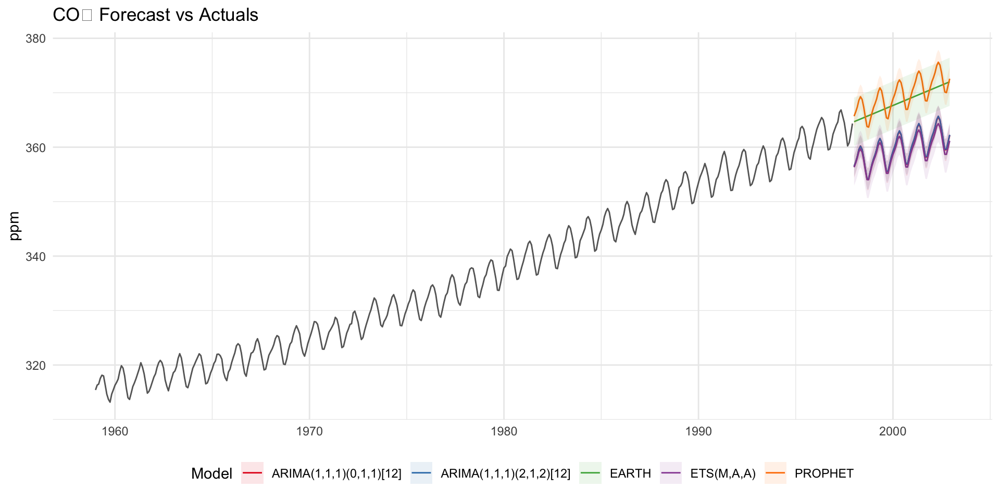
Refit to Full Dataset & Forecast Forward
The final step is to refit the models to the full dataset using modeltime_refit() and forecast them forward.
refit_tbl <- calibration_table |>
modeltime_refit(data = co2_tbl)
refit_fc <- refit_tbl |>
modeltime_forecast(h = "3 years", actual_data = co2_tbl)
refit_fc |>
filter(.key == "actual") |>
ggplot(aes(x = .index, y = .value)) +
geom_line(color = "grey40") +
geom_line(data = filter(refit_fc, .key == "prediction"),
aes(color = .model_desc)) +
geom_ribbon(data = filter(refit_fc, .key == "prediction"),
aes(ymin = .conf_lo, ymax = .conf_hi, fill = .model_desc),
alpha = 0.1) +
scale_color_brewer(palette = "Set1") +
scale_fill_brewer(palette = "Set1") +
labs(title = "CO₂ Forecast: Refit to Full Dataset",
x = NULL, y = "ppm", color = "Model", fill = "Model") +
theme_minimal() +
theme(legend.position = "bottom")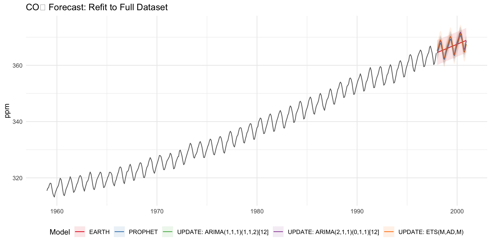
Why refit?
The models have all changed! This is the (potential) benefit of refitting.
More often than not refitting is a good idea. Refitting:
Retrieves your model and preprocessing steps
Refits the model to the new data
Recalculates any automations. This includes:
- Recalculating the changepoints for the Earth Model
- Recalculating the ARIMA and ETS parameters
Preserves any parameter selections. This includes:
Any other defaults that are not automatic calculations are used.
Growing Ecosystem
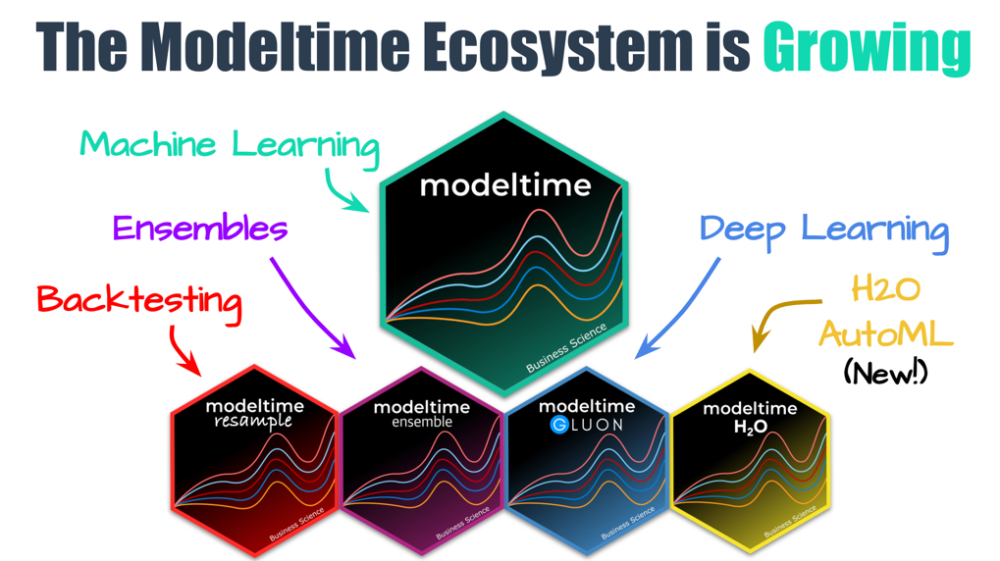
Why Streamflow Forecasting Is Hard
We’re going to try three progressively more sophisticated approaches to forecast Colorado River flow at Lees Ferry.
None of them will beat a naïve seasonal forecast.
That’s not a failure of the tools — it’s the lesson. Understanding why models fail on a specific system is as important as knowing how to fit them. By the end of this example you’ll be able to:
- Read MASE and explain what “worse than naïve” actually means
- Diagnose whether the problem is data quantity, regime shift, or missing physical drivers
- Articulate what a real operational forecast system would need that these models don’t have
Bringing It Home: Forecasting Streamflow at Lees Ferry
In Lab 1 you built an analytical pipeline for the Colorado River: pulling 44 years of daily discharge from USGS NWIS, normalizing by drainage area, detecting low-flow threshold exceedances, and modeling the upstream-downstream relationship between Glenwood Springs and Lees Ferry.
Now we apply everything from this lecture to that same data:
- Pull daily discharge at Lees Ferry with
dataRetrieval - Convert to a monthly time series (the natural forecasting granularity)
- Fit multiple models with
modeltime: ARIMA, Prophet, ETS - Evaluate three rounds of model refinement — and learn from each failure
Lees Ferry is the Colorado River Compact’s primary accounting point. Forecasting flow here has direct operational consequences for 40 million people across 7 states.
Step 1: Pull Data with dataRetrieval
library(dataRetrieval)
library(tidyverse)
library(lubridate)
library(modeltime)
library(tidymodels)
library(timetk)
# Lees Ferry: the Compact's accounting point (same gage as Lab 1)
lees_daily <- readNWISdv(
siteNumbers = "09380000",
parameterCd = "00060", # discharge, cfs
startDate = "1980-01-01",
endDate = "2023-12-31"
) |>
renameNWISColumns() |>
select(Date, Flow)
glimpse(lees_daily)
#> Rows: 16,071
#> Columns: 2
#> $ Date <date> 1980-01-01, 1980-01-02, 1980-01-03, 1980-01-04, 1980-01-05, 1980…
#> $ Flow <dbl> 2650, 8560, 9480, 10200, 10700, 6670, 12900, 14400, 16500, 7910, …Step 2: Aggregate to Monthly
Daily data is noisy and computationally heavy for forecasting. Monthly mean discharge captures the hydrologically meaningful signal: the seasonal snowmelt cycle: while filtering short-term noise.
Note
Mean vs. sum? For forecasting we use mean(Flow): it normalizes for months with different lengths and focuses on flow intensity. For operational water accounting (e.g., Compact compliance), use sum(Flow) to get total volume delivered. Know which question you’re answering before you aggregate.
lees_monthly <- lees_daily |>
mutate(date = floor_date(Date, "month")) |>
group_by(date) |>
summarise(flow = mean(Flow, na.rm = TRUE), .groups = "drop")
lees_monthly
#> # A tibble: 528 × 2
#> date flow
#> <date> <dbl>
#> 1 1980-01-01 9825.
#> 2 1980-02-01 10696.
#> 3 1980-03-01 9851.
#> 4 1980-04-01 14505.
#> 5 1980-05-01 13749.
#> 6 1980-06-01 24739.
#> 7 1980-07-01 25777.
#> 8 1980-08-01 20794.
#> 9 1980-09-01 16490
#> 10 1980-10-01 12637.
#> # ℹ 518 more rowsStep 3: Visualize the Series
lees_monthly |>
ggplot(aes(x = date, y = flow)) +
geom_line(color = "steelblue", alpha = 0.8) +
geom_smooth(method = "loess", span = 0.15, color = "darkred", se = FALSE) +
labs(title = "Monthly Mean Discharge: Lees Ferry, AZ",
subtitle = "USGS 09380000 | 1980–2023",
x = NULL, y = "Discharge (cfs)") +
theme_minimal()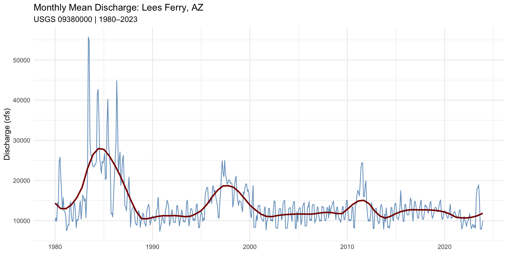
What do you see?
- Trend: A long-term decline post-2000: the megadrought fingerprint
- Seasonality: Annual snowmelt pulse peaking May–June, trough in autumn
- Anomalies: 2011 and 2023 stand out as exceptional wet years (La Niña recovery / atmospheric rivers)
This series has all three components from decomposition:
- A non-stationary trend (declining)
- Strong seasonality (monthly cycle)
- Structured remainder (ENSO-driven anomalies)
This is exactly the kind of series where modeltime shines.
The Forecasting Plan
Three rounds — each testing a hypothesis about what’s limiting model skill:
| Round | Hypothesis | Training data | Predictors |
|---|---|---|---|
| 0 | Baseline: just fit the full record | 1980–2023 | Date only |
| 1 | Pre-2000 high-flow regime is noise | Post-2000 only | Date only |
| 2 | Models need physical upstream signal | Post-2000 only | Date + upstream flow |
After each round we check: did MASE drop below 1? (Spoiler: no. The question is why.)
Round 0: Full Record Baseline
Using all 44 years of data — the simplest possible starting point:
splits_full <- time_series_split(
lees_monthly,
date_var = date,
assess = "60 months",
cumulative = TRUE
)
mods_full <- list(
arima_reg() |> set_engine("auto_arima"),
prophet_reg(seasonality_yearly = TRUE) |> set_engine("prophet"),
exp_smoothing() |> set_engine("ets")
)
models_v0 <- map(mods_full, ~ fit(.x, flow ~ date, data = training(splits_full)))
cal_v0 <- as_modeltime_table(models_v0) |>
modeltime_calibrate(testing(splits_full), quiet = FALSE)
modeltime_accuracy(cal_v0) |>
arrange(mase) |>
select(.model_desc, mae, mape, mase, rmse, rsq)
#> # A tibble: 3 × 6
#> .model_desc mae mape mase rmse rsq
#> <chr> <dbl> <dbl> <dbl> <dbl> <dbl>
#> 1 PROPHET 1668. 14.6 1.40 2140. 0.297
#> 2 ETS(M,AD,M) 1770. 16.3 1.48 2273. 0.249
#> 3 ARIMA(2,1,1)(1,0,1)[12] 2012. 19.4 1.69 2559. 0.188Round 0 verdict: MASE > 1 across the board — naïve wins. Hypothesis to test: the pre-2000 high-flow regime is distorting what the models learn. Does restricting to the modern regime help?
Round 1: Test — Restrict to Post-2000 Regime
Same models, same workflow: only the training window changes:
mods <- list(
arima_reg() |> set_engine("auto_arima"),
arima_boost(min_n = 2, learn_rate = 0.015) |> set_engine("auto_arima_xgboost"),
prophet_reg(seasonality_yearly = TRUE) |> set_engine("prophet"),
exp_smoothing() |> set_engine("ets")
)
models_v1 <- map(mods, ~ fit(.x, flow ~ date, data = training(splits_modern)))
cal_v1 <- as_modeltime_table(models_v1) |>
modeltime_calibrate(testing(splits_modern), quiet = FALSE)Round 1: Results
modeltime_accuracy(cal_v1) |>
arrange(mase) |>
select(.model_desc, mae, mape, mase, rmse, rsq)
#> # A tibble: 4 × 6
#> .model_desc mae mape mase rmse rsq
#> <chr> <dbl> <dbl> <dbl> <dbl> <dbl>
#> 1 ETS(M,N,M) 1767. 16.2 1.48 2293. 0.217
#> 2 PROPHET 1882. 17.5 1.58 2405. 0.222
#> 3 ARIMA(2,0,1)(1,0,1)[12] WITH NON-ZERO MEAN 1897. 18.0 1.59 2405. 0.204
#> 4 ARIMA(1,0,1)(2,0,0)[12] WITH NON-ZERO MEAN 1919. 18.4 1.61 2471. 0.200MASE of 1.48–1.61 means all four models are worse than the naïve seasonal benchmark — simply repeating last year’s value would outperform every model here. Restricting to post-2000 data did not help; it may have made things worse by reducing the training set size, giving the models less signal to learn the seasonal pattern.
Two things MASE > 1 tells us:
- Time structure alone (AR, MA, seasonal lags) is insufficient — the series has variance driven by physical drivers the model cannot see
- The benchmark (last year’s value) is hard to beat because the seasonal cycle is highly stable; errors come from inter-annual variability in snowpack magnitude, not timing
Round 1 verdict: MASE got worse (1.48–1.61). Hypothesis rejected — restricting the window removed signal, not noise. New hypothesis: models need physical information about upstream conditions to anticipate inter-annual variability.
Why Does Training Data Era Matter?
- The 1984 peak (~55,000 cfs) is 5× the current typical flow
- Training on 1980–2023 teaches the model a world that no longer exists: the pre-2000 high-flow regime inflates variance estimates and distorts trend learning
- Every model wastes capacity fitting the pre-2000 regime it will never need to forecast
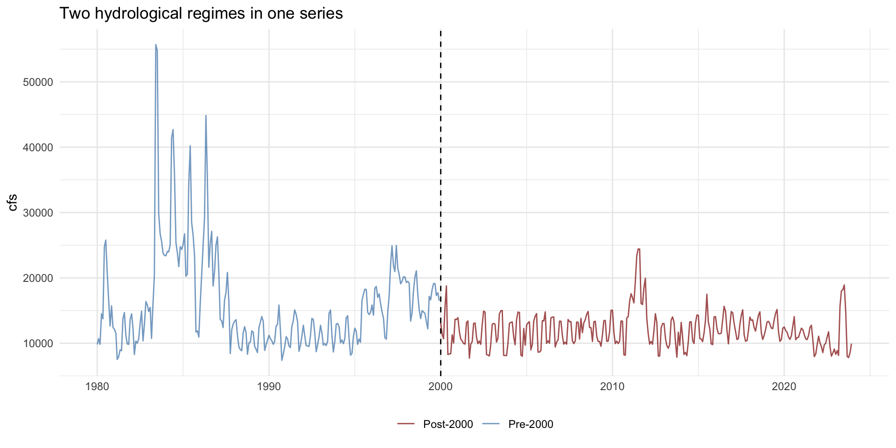
Round 2: Test — Add an Upstream Regressor
Flow at Lees Ferry is driven by what happens upstream. Glenwood Springs (same relationship from Lab 1 Q9) — if upstream flow is a physical predictor, models with that signal should outperform pure time-structure models.
glenwood_monthly <- readNWISdv(
siteNumbers = "09085000", # Roaring Fork at Glenwood Springs
parameterCd = "00060",
startDate = "2000-01-01",
endDate = "2023-12-31"
) |>
renameNWISColumns() |>
mutate(date = floor_date(Date, "month")) |>
group_by(date) |>
summarise(glenwood = mean(Flow, na.rm = TRUE), .groups = "drop")
lees_reg <- lees_modern |>
left_join(glenwood_monthly, by = "date") |>
drop_na(glenwood)Round 2: Split with Regressor
The regressor must be present in both training and the future forecast window. For an h-step ahead forecast we use the known test-period Glenwood values as the “future” regressor: valid because upstream data is available in near real-time from NWIS.
Round 2: Models with Regressor
Only models that accept xreg / external regressors participate. Prophet and ARIMA both support this natively in modeltime:
mods_reg <- list(
# ARIMA with exogenous regressor (ARIMAX)
arima_reg() |> set_engine("auto_arima"),
# Prophet with Glenwood as an additive regressor
prophet_reg(seasonality_yearly = TRUE) |> set_engine("prophet"),
# Boosted ARIMA: XGBoost picks up nonlinear upstream signal
arima_boost(min_n = 2, learn_rate = 0.015) |>
set_engine("auto_arima_xgboost")
)
models_v2 <- map(mods_reg, ~ fit(.x, flow ~ date + glenwood, data = train_reg))
cal_v2 <- as_modeltime_table(models_v2) |>
modeltime_calibrate(test_reg, quiet = FALSE)Round 2: Results
modeltime_accuracy(cal_v2) |>
arrange(mase) |>
select(.model_desc, mae, mape, mase, rmse, rsq)
#> # A tibble: 3 × 6
#> .model_desc mae mape mase rmse rsq
#> <chr> <dbl> <dbl> <dbl> <dbl> <dbl>
#> 1 REGRESSION WITH ARIMA(1,0,1)(2,0,0)[12] ERRORS 1857. 17.9 1.56 2401. 0.320
#> 2 ARIMA(2,0,1)(1,0,1)[12] WITH NON-ZERO MEAN W/ X… 1859. 17.7 1.56 2375. 0.232
#> 3 PROPHET W/ REGRESSORS 2104. 20.1 1.76 2546. 0.315MASE of 1.56–1.76 — still worse than naïve. Adding the upstream Glenwood regressor moved the needle marginally (ARIMA dropped from ~1.59 to 1.56) but did not solve the problem. Prophet with regressors actually got worse (1.76).
Why didn’t it work?
- A single upstream gage captures flow volume but not its timing or source (snowmelt vs. rain-on-snow vs. baseflow)
- The regressor is contemporaneous — we’re using current Glenwood flow to predict current Lees Ferry flow, which is nearly circular at monthly resolution
- The naïve benchmark (repeat last year) is genuinely hard to beat on a highly seasonal series with stable timing but variable magnitude
Comparing All Three Rounds
bind_rows(
modeltime_accuracy(cal_v0) |> mutate(round = "v0: Full record 1980–2023 (baseline)"),
modeltime_accuracy(cal_v1) |> mutate(round = "v1: Post-2000 only"),
modeltime_accuracy(cal_v2) |> mutate(round = "v2: Post-2000 + upstream regressor")
) |>
group_by(round) |>
slice_min(mase, n = 1) |>
select(round, .model_desc, mae, mase, rmse, rsq) |>
arrange(mase)
#> # A tibble: 3 × 6
#> # Groups: round [3]
#> round .model_desc mae mase rmse rsq
#> <chr> <chr> <dbl> <dbl> <dbl> <dbl>
#> 1 v0: Full record 1980–2023 (baseline) PROPHET 1668. 1.40 2140. 0.297
#> 2 v1: Post-2000 only ETS(M,N,M) 1767. 1.48 2293. 0.217
#> 3 v2: Post-2000 + upstream regressor REGRESSION WITH … 1857. 1.56 2401. 0.320All three rounds produce MASE > 1 — and each intervention made accuracy worse, not better:
- v0 (baseline, full record): best MASE = 1.40 with PROPHET — the longer history actually helps
- v0 → v1: restricting to post-2000 increased MASE to 1.48 — less data meant less signal for the seasonal pattern, not less noise
- v1 → v2: adding the upstream regressor pushed MASE to 1.56 — the contemporaneous Glenwood flow adds little beyond what the seasonal structure already captures
Takeaway: for this system, more data beats a cleaner regime. Beating the naïve benchmark requires leading indicators (SWE measured before runoff, reservoir storage, climate outlooks) — not concurrent flow from a nearby gage.
Final Step: Forecast Anyway
All three rounds failed to beat naïve. We forecast with v2 anyway — because even a MASE > 1 model captures the seasonal structure and provides uncertainty bounds that a naïve “repeat last year” cannot.
fc <- cal_v2 |>
modeltime_forecast(
new_data = test_reg,
actual_data = lees_reg
)
fc |>
filter(.key == "actual") |>
ggplot(aes(x = .index, y = .value)) +
geom_line(color = "grey40") +
geom_line(data = filter(fc, .key == "prediction"),
aes(color = .model_desc)) +
geom_ribbon(data = filter(fc, .key == "prediction"),
aes(ymin = .conf_lo, ymax = .conf_hi, fill = .model_desc),
alpha = 0.1) +
scale_color_brewer(palette = "Set1") +
scale_fill_brewer(palette = "Set1") +
labs(title = "Lees Ferry Forecast: Post-2000 + Upstream Regressor",
x = NULL, y = "Monthly Mean Discharge (cfs)",
color = "Model", fill = "Model") +
theme_minimal() +
theme(legend.position = "bottom")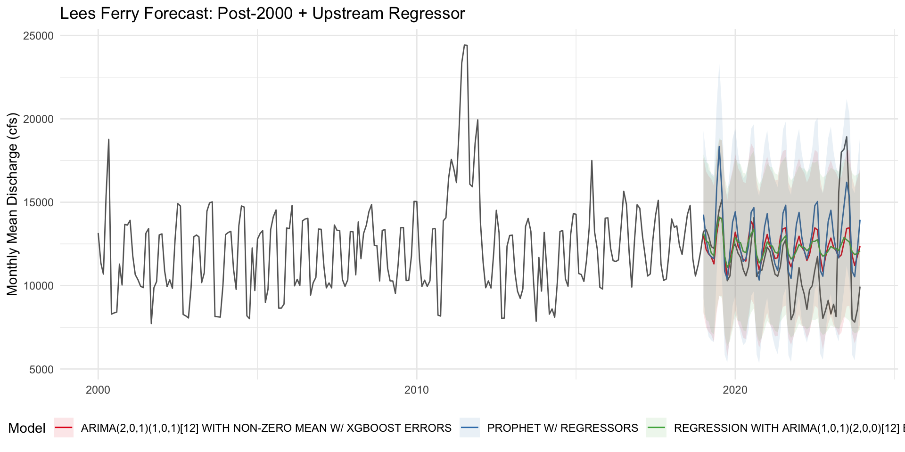
What Does the Forecast Tell Us?
What the model gets right:
- The seasonal cycle: spring pulse, summer drawdown, winter baseflow — the timing is reliable
- The general magnitude range: models trained on post-2000 data capture the modern low-flow regime
- Uncertainty grows appropriately beyond 12–18 months — honest about what it doesn’t know
What it cannot do:
- Anticipate wet-year spikes (2023-type events) without a leading SWE signal
- Distinguish drought persistence from mean reversion
- Outperform “repeat last year” on inter-annual magnitude
What would actually help: April 1 SWE at key basins, reservoir storage anomaly, PDO/ENSO phase — leading indicators, not concurrent observations. This is what USBR’s operational ESP system uses.
Tip
In Lab 6 you’ll add exactly this kind of outside information — GridMET climate covariates (precipitation, temperature, solar radiation) and MACA future projections — to your Poudre River forecast. That’s the missing ingredient here.
Connecting Back to Lab 1
In Lab 1 you:
- Pulled this exact gage with
readNWISdv()andrenameNWISColumns() - Computed the 7-day rolling mean and flagged below-threshold days
- Built a water-year bar chart showing the post-2000 decline
- Fit a simple log-log linear model from Glenwood Springs → Lees Ferry
Today you extended that pipeline to time series forecasting:
| Lab 1 skill | Week 7 extension |
|---|---|
readNWISdv() + renameNWISColumns() |
Same: data foundation unchanged |
zoo::rollmean() |
→ decompose() / stl() for formal decomposition |
| 10th-percentile threshold | → Trend + remainder components |
| Two-gauge join (Glenwood → Lees) | → Glenwood as exogenous regressor in ARIMAX / Prophet |
lm(log_lees ~ log_glenwood * season) |
→ modeltime time series model with flow ~ date + glenwood |
| Annual bar chart | → Calibrated 5-year probabilistic forecast |
Summary & Takeaways
Time series data is sequential and ordered: always decompose (trend + seasonality + remainder) before modeling
lubridatehandles date parsing;ts/zoo/xtsfor classic data;tsibble+feastsfor tidy workflowsACF/PACF plots guide ARIMA order selection; test stationarity with
adf.test()/kpss.test()firstmodeltimeunifies ARIMA, Prophet, ETS, and boosting: sameparsnip+workflowsinterface as tidymodelsTraining data era matters: models trained on structurally different regimes forecast poorly: restrict to the relevant period
Exogenous regressors (upstream flow, snowpack) carry physical signal that time structure alone cannot predict; use
flow ~ date + regressorForecast horizon is limited: uncertainty grows fast; regressor availability caps how far forward you can forecast reliably
Walk-forward CV respects temporal order: never use random k-fold on time series data
The
dataRetrievalpipeline from Lab 1 is directly extensible to ensemble forecasting withmodeltime
Course Recap
What We Built This Semester
A complete environmental data science pipeline:
- Reproducible workflows & tidy data wrangling
- Vector spatial data, projections & interactive mapping
- JSON, GeoJSON, STAC & cloud-native data access
- Spatial predicates, tessellations & programming abstractions
- Raster data, remote sensing & spectral analysis
- Machine learning, EDA, normality & spatial cross-validation
- Time series decomposition, ARIMA, Prophet & forecasting
Applied to real water systems:
- Colorado River compact accounting (Lees Ferry)
- US border enforcement zones (distance/projection)
- National Dam Inventory (tessellations & MAUP)
- Palo, Iowa flood mapping (Landsat + STAC)
- CAMELS basin hydrology (ML at scale)
- Cache la Poudre streamflow (climate forecasting)
Week 1: Foundations
Your Digital Environment
- Bits, bytes, and file formats: what is actually stored on disk
- Absolute vs. relative paths;
here::here()for project portability - File naming conventions: machine-readable, human-readable, sortable
- Version control basics and terminal navigation
Tidy Data & dplyr
- Tidy principles: variables as columns, observations as rows
- Core verbs:
filter(),select(),mutate(),summarize(),group_by(),arrange() tidyselecthelpers,|>pipe,if_else(),transmute()- Relational joins:
inner_join,left_join,right_join ggplot2grammar of graphics
Lab 1: Colorado River Streamflow
readNWISdv()+renameNWISColumns()for 7 USGS gauges, 44 years- Day-over-day flow changes, threshold detection, rolling means
- Predictive modeling of Lees Ferry from upstream gauges with
broom
Key packages: tidyverse, dataRetrieval, lubridate, zoo, broom

Week 2: Vector Data & Interactive Mapping
Simple Features & Projections
- SF standard: geometry types (Point, Line, Polygon, Multi*, GeometryCollection)
- The spatial computing stack: GDAL (I/O), PROJ (CRS), GEOS (geometry ops)
- Geographic vs. projected CRS: when each matters;
st_transform() - Topological dimension: 0D points, 1D lines, 2D polygons
- Distance, area, perimeter with
units-aware results
Interactive Mapping with Leaflet
- Web tiles, XYZ tile servers, Web Mercator (EPSG:3857) and its distortion
- Layered composition: basemap → polygons → markers → popups → controls
leaflet.extras: drawing tools, search, clustering, heatmaps
Lab 2: US Border Spatial Analysis
- Built
sfobjects fromtigris,rnaturalearth, and CSV coordinates st_union,st_cast,st_distance,st_transformon city/border geometries- 100-mile border zone: distance threshold → population in enforcement footprint
gghighlight+ggrepelfor annotated spatial plots
Key packages: sf, AOI, leaflet, leaflet.extras, units, tigris, rnaturalearth, gghighlight, ggrepel
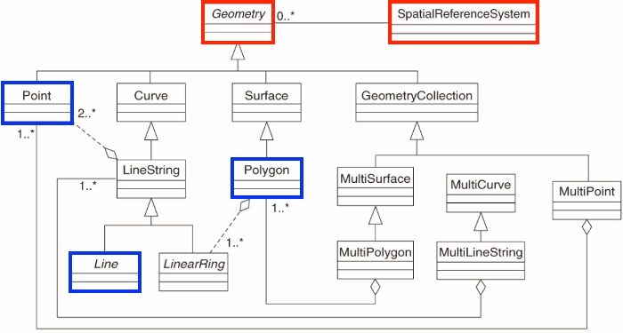
Week 3: Spatial Operations & Programming
Predicates & the DE-9IM Model
- Interior, boundary, exterior of every geometry type
- Dimensionally Extended 9-Intersection Model (DE-9IM): encodes all possible spatial relationships as a 3×3 matrix of intersection dimensions
- Named predicates:
st_intersects,st_within,st_contains,st_touches,st_crosses,st_overlaps,st_disjoint
Tessellations, Simplification & MAUP
- Geometry simplification: Douglas-Peucker via
ms_simplify(): resolution vs. file size tradeoff - Tessellations: Voronoi, Delaunay, square grid, hexagonal grid: regularity, compactness, cost
- Modifiable Areal Unit Problem: aggregation unit changes the answer
Writing Functions
- Functions as first-class objects; environment scoping
- Arguments, defaults, return values
- Rule of three: if you write it twice, write a function
- Point-in-polygon as the motivating case study (spatial join → count → visualize)
- Moran’s I across tessellations as a worked example of function reuse
Lab 3: National Dam Inventory
- Tessellated CONUS with 4 methods (Voronoi, Delaunay, square grid, hex); point-in-polygon for ~90,000 dams
- Geometry simplification with
ms_simplify()to balance detail vs. file size - Wrote reusable tessellation + visualization functions
- Observed MAUP directly: same dams, different maps
Key packages: sf, rmapshaper, units, AOI
Week 4: Raster Data & Cloud-Native Workflows
Raster Data Model
- Continuous fields vs. discrete objects: when to use raster vs. vector
- Structure: extent, resolution, CRS, bands (layers); implicit coordinates
- Spectral values, RGB channels, bits/bytes per pixel
terraoperations:crop(),mask(),aggregate(),classify(),extract()- Raster algebra: band math, spectral indices (NDVI, SWIR)
- Multi-layer arrays and S4 class system
JSON, GeoJSON & STAC (applied)
- STAC Catalog → Collection → Item → signed Asset URL
rstac:stac()→stac_search()→get_request()→items_sign()→assets_download()- Safe download pattern: HEAD request to check file size first
Lab 4: Palo, Iowa Flood 2016
- STAC search on Microsoft Planetary Computer for Landsat 8 (Sept 24–29, 2016)
- Downloaded 6 spectral bands;
plotRGB()for true-color and false-color composites - Raster classification to delineate flood extent
- Pre/post comparison to quantify inundated area
Key packages: terra, rstac, sf, AOI
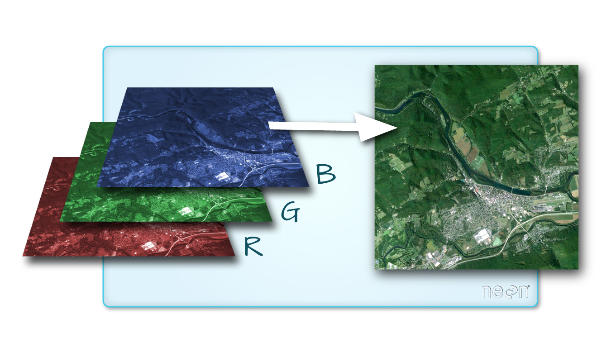
Week 5: Machine Learning: EDA, tidymodels & Spatial CV
Exploratory Data Analysis
- EDA checklist: structure, missingness, distributions, correlations, outliers
skimr::skim(),visdat,ggpubrfor rapid data profiling- Normality testing: Q-Q plots, Shapiro-Wilk,
nest/mapfor per-group tests - Non-normal data: log-transform, nonparametric tests (Wilcoxon, Kruskal-Wallis), bootstrapping
The tidymodels Ecosystem
rsample: train/test splits,vfold_cv(), stratified samplingrecipes: normalization, dummy encoding, imputation, feature engineeringparsnip: unified spec: same code, swap engineworkflows: bundle recipe + model;workflow_set()for multi-model comparisonyardstick: accuracy, ROC AUC, RMSE, MAE, RSQ
Spatial Autocorrelation & Honest CV
- Moran’s I: positive I = similar values cluster; tests residuals AND predictors
- Random
vfold_cv()leaks spatial signal → inflated skill scores spatial_block_cv(): whole geographic blocks per fold: no leakage- High-Moran’s-I predictors may be geographic proxies, not causal features
- VIP: permutation-based importance is comparable across model families
Lab 5: CAMELS Hydrology ML
workflow_set()comparing 6 model families simultaneously- VIP: snowpack and aridity dominated; spatial leakage inflated random CV ~15%
Key packages: tidymodels, skimr, visdat, vip, spatialsample, baguette, powerjoin
Week 6: Model Families & Hyperparameter Tuning
Six Model Families
| Family | parsnip spec |
Key hyperparameters |
|---|---|---|
| Linear / Logistic | linear_reg() / logistic_reg() |
penalty, mixture |
| Decision Tree | decision_tree() |
tree_depth, min_n |
| Random Forest | rand_forest() |
mtry, trees, min_n |
| Boosted Trees | boost_tree() |
learn_rate, tree_depth |
| SVM | svm_rbf() |
cost, rbf_sigma |
| Neural Net | mlp() |
hidden_units, penalty |
Tuning Workflow
- Mark parameters with
tune()→tune_grid()with a named grid select_best()→finalize_workflow()→last_fit()on holdout test set- Never select hyperparameters using test data
When to Use Which Model
- Linear/logistic: interpretable baseline; requires feature engineering
- Decision tree: explainable but unstable; use as a stepping stone
- Random forest: robust default for tabular environmental data; handles missingness
- Boosted trees: highest ceiling; prone to overfitting without careful tuning
- SVM: strong for small/medium datasets with clear margins
- Neural net: shines with large data, images, or sequences (e.g., LSTM for streamflow)
Lab 5 continued: hyperparameter tuning and last_fit() finalization applied to CAMELS runoff prediction
Week 7: Time Series Analysis & Forecasting
Time Series Foundations
- Sequential data: order matters: standard ML splits leak the future
- Decomposition: trend + seasonality + remainder; additive vs. multiplicative
ts,zoo,xtsfor base/irregular workflows;tsibble+feastsfor tidygg_season(),gg_subseries(),gg_lag()for visual diagnostics
ARIMA
- Stationarity prerequisite:
adf.test()/kpss.test() - ACF → MA(q) order; PACF → AR(p) order; slow decay → differencing needed
- Seasonal ARIMA notation:
(p,d,q)(P,D,Q)[m];auto.arima()for selection - AIC/AICc: penalizes complexity: lower is better
Prophet & modeltime
- Prophet:
y(t) = g(t) + s(t) + h(t) + ε(t): Fourier seasonality, changepoint detection modeltime: ARIMA, Prophet, ETS, boosting under oneparsnip-style interface- Walk-forward CV (
time_series_cv()): never random k-fold on time series - Training era matters: structural regime shifts break models trained on wrong period
- Exogenous regressors:
flow ~ date + upstream_flowadds physical signal - MASE < 1 = beats naïve seasonal benchmark
Lab 6: Cache la Poudre Forecasting
- GridMET (historic climate) + MACA (projected) as predictors
- 10-year climate-conditioned streamflow forecast
The Ecosystem We Built
Data Access Layer
dataRetrieval: USGS NWIS streamflow & water qualityclimateR: GridMET, MACA, TerraClimate rastersrstac: cloud raster discovery via Planetary ComputerAOI,tigris,rnaturalearth: boundaries & admin datajsonlite: REST API responses
Wrangling & Modeling Layer
dplyr+tidyr+purrr: data manipulation, reshaping, iterationbroom: tidy model output (tidy(),glance(),augment())lubridate+zoo: dates, rolling windows, irregular time seriessf+terra: vector and raster spatial operationstidymodels: ML specification, training, evaluation, tuningspatialsample: geography-aware cross-validationtsibble+feasts: tidy time series diagnosticsmodeltime+timetk: unified forecasting workflows
Communication Layer
ggplot2: publication-quality static graphicsleaflet+leaflet.extras: interactive web mapsplotly: interactive chartsflextable/kableExtra: formatted tablesQuarto: reproducible HTML, PDF, and slides from one source
From Lab 1 to Lab 6: One Continuous Thread
| Lab | Question | Key new tools | Builds on |
|---|---|---|---|
| Lab 1 | How has Lees Ferry flow changed? | dataRetrieval, dplyr, zoo, broom |
: |
| Lab 2 | Who lives in the 100-mile border zone? | sf, tigris, st_distance, gghighlight |
Lab 1 wrangling |
| Lab 3 | Where are the dams, and does the pattern depend on how we aggregate? | Tessellations, rmapshaper, custom functions |
Lab 2 spatial ops |
| Lab 4 | How large was the Palo flood? | terra, rstac, raster algebra, composites |
Lab 3 predicates |
| Lab 5 | What basin attributes predict runoff? | tidymodels, spatialsample, vip |
Lab 1 modeling + Lab 4 spatial |
| Lab 6 | What will Poudre flow be in 2033? | modeltime, climateR, exactextractr, MACA |
Every lab combined |
Lab 6 draws on USGS data access (Lab 1), basin polygon operations (Labs 2–3), raster climate extraction (Lab 4), and the tidymodels workflow pattern (Lab 5): running end-to-end in a single document.
What You Can Now Do
Answer questions like:
- Where does water come from, and where does it go?
- How has streamflow changed over 40 years: and why?
- Which basins are most drought-vulnerable given their climate and geology?
- What spectral signature indicates standing water after a flood?
- What is the predicted flow at Lees Ferry in 2033 under a warming scenario?
With tools used in practice by:
- USBR and CWCB:
dataRetrieval+ operational forecasting - USACE flood operations: raster inundation mapping
- State water agencies: MACA climate projections for planning
- Remote sensing labs: STAC + Planetary Computer at scale
The habits that transfer to every future project:
- Reproducibility: relative paths,
here, version-controlled projects - EDA before modeling: distributions, missingness, spatial structure first
- Decompose the signal: trend + seasonality + remainder before fitting
- Honest evaluation: spatial CV and walk-forward CV, never random splits on structured data
- Physical intuition: does the model agree with what the hydrology says should happen?
- Functions over copy-paste: three repetitions = write a function
- Communicate uncertainty: intervals and residual diagnostics, not just point estimates
- Open data, open code: reproducible work is citable, auditable, and extensible
It’s been a long 7 weeks — I hope you were able to take something away from it.
Congrats on making it through.
Good luck with whatever career path you pursue, and always feel free to reach out.